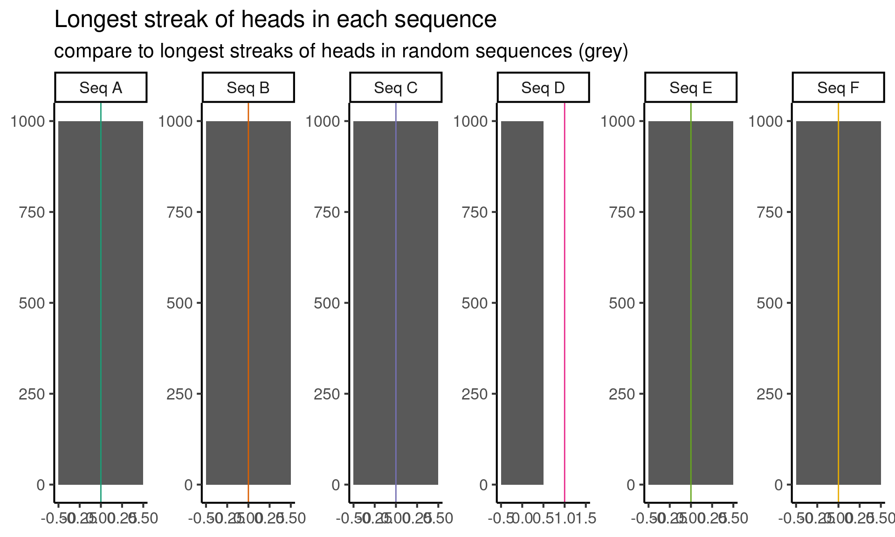
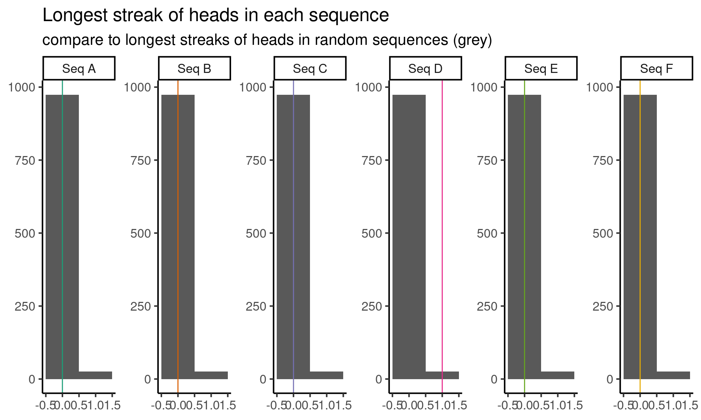

![]()
sequences <- c(
A = "HTHTHTHTHTHTHTHTHTHTHTHTHTHTHTHTHHTHTHTHTHTHTHTTHTHTHTHTHTHTHHTHTHTHTHTHTHTHTHTHTHTHTHTHTHHTTHTHTHTHTHTHTHTHTHTHTHTHTHHTHTHTHTHTHTHTHTHTHTHTHTTHTHTHTHTHTHTHTHTHTHTHTHTHHTHTHTHTHTHTHTHTHTHTHTHHTHTHTHTH",
B = "HHHTHTTTHHTHHTHHHTTTTHTHTHHTTHTHHHTHHTHTTTHTHHHTHTTTHTHTHHTHTHTTHTHHTHTHTTTHTHHHTHTHTTHTHTHHTHTHTHHHTHTTTHTHHTHTHTHHTTTHTHHTHHTTTTHTHTHHHTHTTHTHHTHTHTTHTHHTHTHHHTHHHTHTTTHTTHTTTHTHHHTHTHTTHTHHTHHTHTTT",
C = "HHTHTHTTTHTHHHTHHTTTHTHHTHTTTHTHTHHTHTHTTHTHHHHHHTTTHTHTHHTHTTTHTHHTHTHTTTHTHHHTTHTTTHTHTHHHHTHTTHHTTTTTHTHHHTHTHTTTTTHHHTHHTHHTHHHTTTTHTHTHHHTHHTTTTTHTHHHTHTHTHTTTHTHHHTHTHTHTTHTHHTHTHTHTTTTHTHHHTHTH",
D = "HTHHHHHHHTHTTHHTTHHHTHTHTTTHHTHHHTHHTTHTTTTTTTTTHTHHTTTTTHTHTHTHHTTHTTHTTTTTHHHTHTTTHTHTHHHTHTTTTHTHTHHTTHTHTTHHTHTHHHHTHTTHHTTHTTHTTHTHHHHHHTTTTTTHHHTTHTHHHHTTTHTTHHHTTHTHHTTTHHTHHTTTHTHHTHHHTHHTTHHH",
E = "HHHHHHHHHHHTTTTTTTTTTTHHHHHHHHHHHHTTTTTTTTTTTHHHHHHHHHHHHHTTTTTTTTTTHHHHHHHHHHTTTTTTTTHHHHHHHHTTTTTTTHHHHHHHHHTTTTTTTTTHHHHHHHHTTTHHHHHHHHHHHTTTTTTTTTTTHHHHHHHHHHHHTTTTTTTTTTTHHHHHHHHHHHHHTTTTTTTTTTHH",
F = "TTHTTTHTTTTTTTHTHTHTHTTHTTHTHHTHHTTTHHTHTTTHTHHTHHHTHTTHHTHHTTHTHTTTTHTHTTTHHTTTTTTTTHTHHTTHTTTTTTHTHTHTHTTTHTTHHTTHTTTHHTTTHTTHTTTTHTTTTHHTTTHTHTHHHTTTTTTHTHHTTTTTTTTTTTTHHHTTTHHHTTTHTTTHTHTTHTTTTTHT"
)TL; DR: We develop a hypothesis test to determine if a sequence of the coin flips comes from repeatedly flipping a fair coin. In the process, we discover lots of things that can go wrong.
The problem
Suppose you have the following six sequences of coin flips. Exactly one sequence is generated by repeatedly flipping a fair coin. Which sequence is it?
To make the problem a little more concrete, here’s a visualization of the coin flip sequences. Which one looks genuinely random to you? Try to solve this problem on your own before reading on!

Eye-balling it
Staring at the sequences, I notice a couple things at first:
Aalways alternates between heads and tails, on every single flipEstays heads for a long time, then switches to tails for a long time, and then the cycle repeats- All of the other cycles switch back and forth between heads and tails fairly often, with some long streaks of all heads or all tails as well
Immediately I think I can rule out A and E, because each flip appears to depend on the previous flips, and this shouldn’t happen when I repeatedly flip a fair coin. Hopefully, I can develop a test later on that will capture this intuition more quantitatively, but for now, I just rule out A and E.
There are some other patterns that look suspicious to me, but I’ve previously learned that my intuition about which sequences are random and which aren’t isn’t very good. Part of the challenge here is that I am mainly looking at non-random sequences in Figure 1, and this doesn’t tell me very much about which patterns are surprising under a random model. So next I generate six sequences by repeatedly flipping a fair coin (from this point onward, when I refer to a “random sequence”, I mean sequence of heads and tails generated by repeatedly flipping a fair coin just like this).

In light of these fair sequences, I can’t really eye-ball anything else that looks suspicious.
Counting heads
The next thing that comes to mind is that, if a coin is fair, then roughly half the flips should be heads and half should be tails. Since I know how to simulate sequences of repeatedly flipped fair coins, I’ll generate a bunch of sequences from this null model, and then compare the number of heads in the observed sequences to the number of heads in the simulated sequences.

5% 95%
89 111 By looking at the grey histogram (which is repeated in each panel), I can observed that, in ninety percent of the sequences from a repeatedly flipped fair coin, the number of heads in the sequence is between the fifth percentile $q_{0.05} = $ 89 and the ninety-fifth percentile $q_{0.95} = $ 111. This means that it is unlikely that I will see less than 89 heads or more than 111 heads in a random sequence.
| Sequence | Heads in sequence |
|---|---|
| Seq A | 102 |
| Seq B | 102 |
| Seq C | 100 |
| Seq D | 99 |
| Seq E | 109 |
| Seq F | 70 |
Since sequence F has only 70 heads, it seems unlikely that sequence F comes from the null model of independent, fair coin flips.
The approach that I have demonstrated above is to compute a rejection region for a test statistic that contains my test statistic \(90%\) of the time under the null model. This is not the only way to approach the problem. I could also ask, for each sequence, how often do I see a larger number of heads in random sequences. This is known as computing a p-value.
| Sequence | P-value |
|---|---|
| Seq A | 0.349 |
| Seq B | 0.349 |
| Seq C | 0.484 |
| Seq D | 0.466 |
| Seq E | 0.082 |
| Seq F | 0.000 |
When the p-value is small, it means that the number of observed heads in a sequence is either much higher or much lower than typically seen in random sequences. In particular, a p-value of \(p\) (which should always be between zero and one) means that random sequences had as many heads as the mystery sequence only \(p \cdot 100\%\) of the time.
More intuitively: small p-values indicate that data is not compatible with a given model. In this case, the very small p-value for sequence \(F\) indicates that sequence \(F\) is not compatible the random sequence model for coin flips. Sequences \(A, B, C, D\) and to a less extent \(E\) are all compatible with the random sequence model.
If we stare at the p-values a little longer, we might be tempted to conclude that sequence \(C\) is the most likely to be sampled from the random model, since it has the highest p-value. The intuition goes roughly like this: a low p-value tells us that it is improbable that the data \(X_1, ..., X_n\) came from the null model. Therefore a high p-value tells us that is probable the data \(X_1, ..., X_n\) came from the null model.
This is a very common misconception, and if we are a little bit more careful in interpreting the p-value, we can see where it comes from, and also why this reasoning doesn’t quite work. A more precise interpretation of the p-value goes like this: a low p-value tells us that it is improbable that the observed test statistic \(T(X_1, ..., X_n)\) comes from the same distribution of test statistics under the null model.
One challenge here is that the test statistic does not fully characterize the null model. Different test statistics can be used to examine the compatibility of the data with different aspects of the null model! One test statistic might have a small p-value, and a different test statistic might have a large p-value, both for the same null model. It is hard to know what to do in these scenarios.
pretty sure i’m saying things that are wrong here; i need to be more precise
Because hypothesis tests function primarily through a test statistic, we cannot use them to compare the relative probability of hypotheses. To make this slightly more concrete, let’s compute the probability of observing sequences \(A, B, C, D, E\) and \(F\) under the null model. This turns out to be \((1/2)^{200}\) for every single sequence. Under the null model, every single sequence is equally likely!
To recap: we cannot use p-values to tell us about the relative likelihood of hypotheses. P-values tell us if the observed data is compatibility with null model, as measure by a test statistic. And the key thing is that we can’t use compatibility with the null to rank models the likelihood of hypothesis. Many models can be compatible with the data all at once.
data can be compatible with many hypotheses simultaneously – this is not even problem here since the null hypothesis is a point-set!
reject vs accept vs fail to reject. sometime framed as: cannot “accept” the null hypothesis, can only reject it
Similarly, if we compute the expected number of heads under the null model, we cannot conclude that sequence \(C\) is the most likely. Having a sample mean close to a population mean does not tell us about probability of the data under the null.
| Sequence | Heads in sequence | E[num heads|null model] | observed_quantile | P(data|null model) | log P(data|null model) |
|---|---|---|---|---|---|
| Seq A | 102 | 100.1 | 0.651 | 6.223015e-61 | -138.6294 |
| Seq B | 102 | 100.1 | 0.651 | 6.223015e-61 | -138.6294 |
| Seq C | 100 | 100.1 | 0.516 | 6.223015e-61 | -138.6294 |
| Seq D | 99 | 100.1 | 0.466 | 6.223015e-61 | -138.6294 |
| Seq E | 109 | 100.1 | 0.918 | 6.223015e-61 | -138.6294 |
| Seq F | 70 | 100.1 | 0.000 | 6.223015e-61 | -138.6294 |
Longest streak of heads in a row
tried one test, time to develop another one. let’s try streaks. how do i come up with this as a test statistic? by looking at the data? actually, no, more know that streak lengths are a defining feature of binary random sequences a priori. using a priori knowledge to develop tests is typically a good thing.

Now we’re down to sequences \(C\) and \(D\) as viable. \(C\) has exactly 100 heads, \(D\) does not. Is this suspicious? I leave it for you to find out.
Some suspicious patterns
I found out that the probability of “HHHHHHTTTTTT” occurring 1 or more times in 200 flips is smaller than 0.05, so I decided to eliminate flips4. So we now have flips2 and flips3 left.
come up with tests that reject both \(C\) and \(D\)


welcome to testing hell. what is going on here. all data has surprising variation. looking at it, seeing something surprising, and then testing if that variation is surprising can lead you astray. this is called p-hacking.
Attempt 4
HH HT TH and TT histograms
what makes a good test statistic? i… uh… have no idea. i.e. what gives a certain procedure guarantees and other procedures no guarantees
Follow up challenges
- multiple testing (family-wise error rate of independent and even dependent tests)
- composite null hypothesis